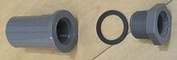
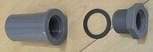

外部濾過器
水中ポンプ、コンテナボックス、塩ビ管部材を使用して外部濾過器を製作した。

Aは物理濾過用の濾過綿（ポリエステル繊維）。ホームセンターで購入した観賞魚用濾過綿を使用。100均でも濾過綿を売っていることがある。

Bは生物濾過用の軽石。ホームセンターの園芸用鉢底石を100均の洗濯ネットに入れて使用。パイプ状の生物濾過専用濾材を使用したこともある。
コンテナボックスは太陽光を遮断する不透明の#7（20x35x11㎝）と#11（20x35x18㎝）の２サイズ。

水中ポンプは吐出量1500L/H（揚程1.5M、電力15W、電源コード1.6M、対応ホース内径13,16）を使用。
感触としては吐出量900L/Hのポンプでも十分そう。

水中ポンプに散水用ホース（内径7.5mm）を繋ぎ、ホースニップル（PT1/2×竹の子外径8mm）を使用して上コンテナボックス（#7）の塩ビ管部材と接続する。
上コンテナボックスの入口配管は、呼び径13のパイプ・水栓エルボ・バルブソケット・水栓ソケット・エルボおよびパッキンで構成する。濾過綿に広く排出されるようにパイプに複数の穴を開ける。

上コンテナボックス底に穴を開け、呼び径20のバルブソケット・水栓ソケットおよびパッキンを取り付け出水口とする。上コンテナボックス内のバルブソケットは接合部を残して鋸でカットする。

 

下コンテナボックス（#11）の受け口として、呼び径40のパイプにU字の切り欠きを開けて設置する（右の写真は加工途中）。


下コンテナボックスの出口配管は、呼び径20のパイプ・水栓エルボ・バルブソケット・エルボおよびパッキンで構成する。

半分地中に埋めたコンクリートブロックの上に設置する。